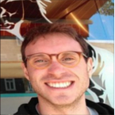
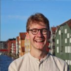

Computational Principles of Intelligence Lab
Independent Max Planck Research Group (PI: Eric Schulz)
Max Planck Institute for Biological Cybernetics, Tübingen, Germany
We are an interdisciplinary research group of cognitive scientists, neuroscientists, and computer scientists. We develop computational models of human intelligence. Our goal is to build formal theories of how people learn, generalize, explore, and find approximate solutions in complex and richly-structured environments.
Research
We build precise and powerful models of people's cognitive abilities, combining psychology, neuroscience, and machine learning. We use interactive games, large data sets, online and lab experiments, as well as behavioral and neuroscientific tools to study how people learn, generalize and explore. We focus on the following three topics:
Generalization
Compared to machine learning algorithms, people are generally much better at generalizing from limited data. To account for this, we work on compositional theories of generalization. Our account assumes that people rely on compositional inductive biases: priors over structures that can be combined and reused, creating potentially infinite generalizations from a finite set of simple building blocks. We model human generalization using methods of function approximation, neural networks and program induction.
Exploration
We study how people use structure to guide their search for rewards. Our models combine the ability to generalize with an uncertainty-driven exploration strategy. Our models describe a large swath of human behavior: adult exploration, developmental differences, exploration in real world environments, psychiatric signatures of exploratory behavior, exploration in graph-structured spaces, as well as neural signatures of generalization-driven reinforcement learning.
Approximation
We investigate how people trade off between accuracy and efficiency when solving complex problems. As biological computation normally costs time and energy, a computationally efficient agent might halt computation after a short time. Using the notion of computational rationality, which assumes that people approximate optimal solutions through limited mental effort, we explain common heuristics as efficient approximation to intractable problems. Moreover, we assess how people re-use computations, how they learn to approximate inferences over time, and how human inference scales with the complexity of the underlying problem.
Principal Investigator
Eric Schulz
eric.schulz@tue.mpg.de
Google scholar
Personal website
@cpilab
CV (pdf)
Eric did his undergrad in Psychology at Humboldt University in Berlin, followed by a MSc in Cognitive and Decision Sciences at University College London, a MSc in Applied Statistics at the University of Oxford, and a MRes in Computer Science again at UCL. He received his PhD from UCL in 2017, where he worked with Maarten Speekenbrink on generalization as function learning. From 2017-2019 he was a postdoctoral fellow in the Department of Psychology at Harvard, working with Sam Gershman and Josh Tenenbaum. Eric wants to uncover the building blocks of intelligence using a mixture of computational, cognitive, and neuroscientific methods.
Postdoctoral Researchers
Marcel Binz
 marcel.binz@tue.mpg.de
Google scholar
Personal website
@cpilab
CV (pdf)
Marcel joined the lab in February 2021 as a postdoctoral researcher. His background is in both cognitive science and machine learning. He received a BSc in Cognitive Science from the Eberhard Karls University of Tübingen and an MSc in Machine Learning from the KTH Royal Institute of Technology in Stockholm. During his PhD, he worked on meta-learning models under the supervision of Dominik Endres at the Philipps-University Marburg. Marcel wants to build models of human learning that are based on realistic assumptions about the environment we interact with, and is also interested in how these models can be applied to improve our decision-making.
Graduate Students
Franziska Brändle
franziska.braendle@tue.mpg.de
Google scholar
Personal website
@cpilab
CV (pdf)
{kind=link}
Franziska did her undergrad in Audiovisual Media at Stuttgart Media University, followed by a MSc in Cognitive Science at the University of Osnabrück. Franziska joined our lab in February 2020 to work towads a computational theory of fun, where fun is defined as an agent's learning progress in a particular environment. Franziska is using a combination of cognitive modeling, behavioral, and virtual reality experiments to figure out how fun acts as an intrinsic reward in human reinforcement learning.
Shuchen Wu

shuchen.wu@tue.mpg.de
Google scholar
Personal website
@cpilab
CV (pdf)
Shuchen did her undergraduate degrees in Physics, Mathematics, and Computer Science at the University of Rochester, followed by a Master’s degree in Neural Systems and Computation. Shuchen joined our lab in March 2020 and she works on the human ability to chunk separate elements in a continous stream of inputs into one coherent and reusable unit. She studies human chunking in sequence learning tasks, modelling this type of behavior as resource-rational reinforcement learning. Shuchen hopes that her findings in human chunking can be used to build improved machine learning algorithms that can extract meaningful representations from richly structured data.
Alexander Kipnis

alexander.kipnis@tue.mpg.de
Google scholar
Personal website
@adkipnis
CV (pdf)
Alex received his BSc in Psychology from Heidelberg University, followed by a MSc in Neuro-Cognitive Psychology from Ludwig Maximilian University of Munich. Alex joined our lab in October 2020 and he uses models of program induction to understand human learning of complex tasks such as intelligence tests and reasoning tasks. Ultimately, he hopes to disentangle different algorithms of program induction using MEG in a list function learning task.
Tankred Saanum
 tankred.saanum@tue.mpg.de
Google scholar
Personal website
@cpilab
CV (pdf)
Tankred did his undergrad in Philosophy at the Humboldt University in Berlin, followed by a MSc in Cognitive and Decision Sciences at University College London. He joined the lab in March 2021, working on how compositionality supports inference and generalization in humans and machines. Ultimately, he seeks to employ the principle of compositionality to develop novel, more human-like machine learning models.
Akshay Jagadish
akshay.jagadish@tue.mpg.de
Google scholar
Personal website
@akjagadish
CV (pdf)
Akshay is a first-year PhD student in the lab. He got his Bachelor of Technology in Electrical and Electronics Engineering from the National Institute of Technology Karnataka, and his MSc in Neural Information Processing from the Graduate Training Center for Neuroscience in Tuebingen. During his PhD, he plans to understand environments that lead to the development of psychiatric disorders using the deep meta-RL framework and find a computational cure for the same.
Collaborating Graduate Students
Lion Schulz

lion.schulz@tue.mpg.de
Google scholar
Personal website
@Lion_Schulz
CV (pdf)
Lion is a PhD student in Peter Dayan's group co-supervised by Eric. After a BSc in Psychology in Dresden, he completed a Masters in Cognitive and Decision Sciences at University College London where he worked with Steve Fleming on the cognitive roots of dogmatism. He's interested in all things metacognition and information search, from basic computations to real-life beliefs and behaviour.
Lara Bertram
lara.bertram@surrey.ac.uk
Google scholar
Personal website
@cpilab
CV (pdf)
Lara is a second year PhD student in Cognitive Psychology at the University of Surrey, UK, and a part-time Bachelor student in Computer Science at Free University, Berlin. She did her Bachelors in Psychology at Ruprecht-Karls-University, Heidelberg, and her Masters in Applied Psychology at the University of Cologne. Lara is interested in the role of emotions in people's evaluations of probabilistic uncertainty and in learning about mathematical concepts. She conducts research in the lab, online and in educational settings.
Research Students
Lena Stocks
lena.stocks@tue.mpg.de
Google scholar
Personal website
@cpilab
CV (pdf)
Lena did her undergrad in Molecular Life Sciences at the Univeristy of Lübeck. She is currently a MSc-student of Computer Science at the University of Luebeck, working on her MSc-thesis in our lab, which she has joined in May 2020. Lena's thesis attempts to formalize a theory of exploration as empowerment in the game Little Alchemy.
Kristin Witte
kristin.witte@tue.mpg.de
Google scholar
Personal website
@WitteKristin
CV (pdf)
Kristin joined our lab in October 2020 as a Research Assistant. She has a BSc in Psychology from Radboud University, Nijmegen, and is currently pursuing a MSc in Neural and Behavioural Science at the University of Tuebingen. Kristin is working on a project about safe exploration in risky bandits, comparing healthy participants with participants suffering from depression and anxiety disorder.
Tobias Ludwig
tobias.ludwig@tue.mpg.de
Google scholar
Personal website
@cpilab
CV (pdf)
Tobias joined our lab in November 2020 as a Research Assistant. He has a BSc in Cognitive Science from the University of Osnabrueck, and is currently pursuing a MSc in Neural Information Processing at the University of Tuebingen. Tobias is working on a project on generative bandits, where he is trying to compress models of exploration and planning into a coherent model of decision making.
Publications
Working papers:- Brändle, F., Binz, M. & Schulz, E. (submitted). Exploration beyond bandits. [PDF]
- Rothe. A., Schulz, E., Sablé Meyer, M., Tenenbaum, J.B & Ruggerri, A.(submitted). Learning sequential patterns from graphical programs.
- Wu, S., Éltető, N., Dasgupta, I. & Schulz, E. (submitted). Chunking as a rational solution to the speed-accuracy trade-off in a serial reaction time task.
- Saanum, T., Schulz, E. & Speekenbrink, M. (submitted). Compositional generalization in multi-armed bandits.[PDF]
- Binz, M., Gershman, S.J, Schulz, E. & Endres, D. (submitted). Heuristics from bounded meta-learned inference. [PDF]
- Rothe. A., Schulz, E., Sablé Meyer, M., Tenenbaum, J.B & Ruggerri, A.(submitted). Learning sequential patterns from graphical programs.
- Schulz, E., Pelz, M., Gopnik, A. & Ruggeri, A. (submitted). Preschoolers search longer when there is more information to be gained. [PDF]
- Jones, A., Schulz, E., Meder, B. & Ruggeri, A. (submitted). Learning functions actively. [PDF]
- Parpart, P., Schulz, E., Speekenbrink, M. & Love, B.C. (submitted). Active learning reveals underlying decision strategies. [PDF]
2021:
- Meder, B., Wu, C.M., Schulz, E. & Ruggeri, A. (accepted). Development of directed and random exploration in children. Developmental Science [PDF]
- Tomov, M., Schulz, E. & Gershman, S.J. (2021). Multi-task reinforcement learning in humans. Nature Human Behaviour. [PDF].
2020:
- Schulz, E. & Dayan, P. (2020). Computational psychiatry for computers. iScience. [PDF]
- Wu, C.M., Schulz, E. & Gershman, S.J. (2020). Inference and search on graph-structured spaces. Computational Brain and Behavior. [PDF]
- Wu, C.M., Schulz, E., Garvert, M.M., Meder, B. & Schuck, N. (2020). Similarities and differences in spatial and non-spatial cognitive maps. PLOS Computational Biology, 16, 1–28. [PDF]
- Brändle, F., Wu, C.M. & Schulz, E. (2020). What are we curious about? Trends in Cognitive Sciences. [PDF]
- Stojic, H., Schulz, E., Analytis, P.P. & Speekenbrink, M. (2020). It's new, but is it good? How generalization and uncertainty guide the exploration of novel options. Journal of Experimental Psychology: General. [PDF]
- Schulz, E., Quiroga, F. & Gershman, S.J. (2020). Communicating compositional patterns. Open Mind, 4, 25-39. [PDF]
- Dasgupta, I., Schulz, E., Tenenbaum, J.B. & Gershman, S.J. (2020). A theory of learning to infer. Psychological Review, 127, 412-441. [PDF]
- Schulz, E., Franklin, N.T. & Gershman, S.J. (2020). Finding structure in multi-armed bandits. Cognitive Psychology, 119, 1-35. [PDF]
- Bertram. L., Schulz, E., Hofer, M. & Nelson, J.D. (2020). The Psychology of Human Entropy Intuitions. Proceedings of the 42nd Annual Meeting of the Cognitive Science Society.[PDF]
2019:
- Schulz, E., Wu, C.M., Ruggeri, A. & Meder, B. (2019). Searching for rewards like a child means less generalization and more directed exploration. Psychological Science. [PDF]
- Schulz, E., Bhui, R. & Love, B.C., Brier, B., Todd, M.T. & Gershman, S.J. (2019). Structured, uncertainty-driven exploration in real-world consumer choice. Proceedings of the National Academy of Sciences, 116, 13903-13908. [PDF]
- Schulz, E. & Gershman, S.J. (2019). The algorithmic architecture of exploration in the human brain. Current Opinion in Neurobiology, 55, 7-14. [PDF]
- Wu, C.M., Schulz, E. & Gershman, S.J. (2019). Searching for rewards in graph-structured spaces. Proceedings of the Cognitive Computational Neuroscience Conference. [PDF]
- Bertram, L., Schulz, E., Hofer, M. & Nelson, J.D. (2019). Entropy Mastermind: Learning from humans about intelligent systems. Human-like Computing Machine Intelligence Workshop. [PDF]
- Wu, C.M., Schulz, E., Gerbaulet, K., Pleskac, T.J. & Speekenbrink, M. (2019). Under pressure: The influence of time limits on human exploration. Proceedings of the 41st Annual Conference of the Cognitive Science Society. [PDF]
- Wu, C.M., Schulz, E. & Gershman, S.J. (2019). Generalization as diffusion: human function learning on graphs. Proceedings of the 41st Annual Conference of the Cognitive Science Society. [PDF]
- Schulz, E., Bertram, L., Hofer, M. & Nelson, J.D. (2019). Exploring the space of human exploration using Entropy Mastermind. Proceedings of the 41st Annual Conference of the Cognitive Science Society. [PDF]
- Dasgupta, I. Schulz, E., Hamrick, J.B. & Tenenbaum, J.B. (2019). Heuristics, hacks, and habits: Boundedly optimal approaches to learning, reasoning and decision making. Workshop at the 41th Annual Conference of the Cognitive Science Society. [PDF] [Website]
2018:
- Wu, C.M., Schulz, E., Speekenbrink, M., Nelson, J.D., & Meder, B. (2018). Generalization guides human exploration in vast decision spaces. Nature Human Behaviour, 2, 915-924. [PDF]
- Dasgupta, I., Schulz, E., Goodman, N.D. & Gershman, S.J. (2018). Remembrance of inferences past: amortization in human hypothesis generation. Cognition, 178, 67-81. [PDF]
- Bramley, N.R., Schulz, E., Xu, F. & Tenenbaum, J.B. (2018). Learning as program indcution. Workshop at the 40th Annual Conference of the Cognitive Science Society. [PDF] [Website]
- Rule, J., Schulz, E., Piantadosi, S.T. & Tenenbaum, J.B. (2018). Learning list concepts through program induction. Proceedings of the 40th Annual Conference of the Cognitive Science Society. [PDF]
- Jones, A., Schulz, E., Meder, B. & Ruggeri, A. (2018). Active function learning. Proceedings of the 40th Annual Conference of the Cognitive Science Society. [PDF]
- Krusche, M.J.F., Schulz, E., Guez, A. & Speekenbrink, M. (2018). Adaptive planning in human search. Proceedings of the 40th Annual Conference of the Cognitive Science Society. [PDF]
- Wu, C.M., Schulz, E., Garvert, M.M., Meder, B. & Schuck, N.W. (2018). Connecting conceptual and spatial search via a model of generalization. Proceedings of the 40th Annual Conference of the Cognitive Science Society. [PDF]
- Dasgupta, I., Smith, K.A., Schulz, E., Tenenbaum, J.B. & Gershman, S.J. (2018). Learning to act by integrating mental simulations and physical experiments. Proceedings of the 40th Annual Conference of the Cognitive Science Society. [PDF]
- Schulz, E., Wu, C.M., Huys, Q.J.M., Krause, A. & Speekenbrink, M. (2018). Generalization and search in risky environments. Cognitive Science, 42, 2592-2620. [PDF]
- Schulz, E., Speekenbrink, M. & Krause, A. (2018). A tutorial on Gaussian process regression: Modelling, exploring, and exploiting functions. Journal of Mathematical Psychology, 85, 1-16. [PDF]
2017:
- Schulz, E., Tenenbaum, J.B., Duvenaud, D. Speekenbrink, M., & Gershman, S.J. (2017). Compositional Inductive Biases in Function Learning. Cognitive Psychology, 99, 44-79. [PDF]
- Schulz, E., Konstantinidis, E. & Speekenbrink, M. (2017). Putting bandits into context: How function learning supports decision making. Journal of Experimental Psychology: Learning, Memory, and Cognition, 44, 927-943. [PDF]
- Dasgupta, I., Schulz, E. & Gershman, S.J. (2017). Where do hypotheses come from? Cognitive Psychology, 96, 1-25. [PDF]
- Schulz, E., Klenske, E.D., Bramley, N.R. & Speekenbrink, M. (2017). Strategic exploration in human adaptive control. Proceedings of the Thirty-Ninth Annual Conference of the Cognitive Science Society. [PDF]
- Wu, C.M., Schulz, E., Speekenbrink, M., Nelson, J.D. & Meder, B. (2017). Mapping the unknown: The spatially correlated multi-armed bandit. Proceedings of the Thirty-Ninth Annual Conference of the Cognitive Science Society. [PDF]
- Dasgupta, I., Schulz, E., Goodman, N.D. & Gershman, S.J. (2017). Amortized Hypothesis Generation. Proceedings of the Thirty-Ninth Annual Conference of the Cognitive Science Society. [PDF]
- Schulz, E. (2017). Towards a unifying theory of generalization. PhD Thesis, University College London, Department of Experimental Psychology. [PDF]
2016:
- Schulz, E., Speekenbrink, M., Hernández Lobato J. M., Ghahramani, Z. & Gershman, S.J. (2016). Quantifying mismatch in Bayesian optimization. NIPS Workshop on Bayesian Optimization: Black-box Optimization and beyond. [PDF]
- Schulz, E., Tenenbaum, J.B., Duvenaud, D., Speekenbrink, M. & Gershman, S.J. (2016). Probing the Compositionality of Intuitive Functions. Advances in Neural Information Processing Systems, 29. [PDF]
- Schulz, E., Huys, Q. J. M., Bach, D.R., Speekenbrink, M. & Krause, A. (2016). Better safe than sorry: Risky function exploitation through safe optimization. Proceedings of the Thirty-Eighth Annual Conference of the Cognitive Science Society. [PDF]
- Schulz, E., Speekenbrink, M. & Meder, B. (2016). Simple trees in complex forests: Growing Take The Best by Approximate Bayesian Computation. Proceedings of the Thirty-Eighth Annual Conference of the Cognitive Science Society. [PDF]
2015:
- Schulz, E., Konstantinidis, E. & Speekenbrink, M. (2015). Learning and decisions in contextual multi-armed bandit tasks. Proceedings of the Thirty-Seventh Annual Conference of the Cognitive Science Society. [PDF]
- Schulz, E., Tenenbaum, J.B., Reshef, D.N., Speekenbrink, M. & Gershman, S.J. (2015). Assessing the perceived predictability of functions. Proceedings of the Thirty-Seventh Annual Conference of the Cognitive Science Society. [PDF]
- Parpart, P., Schulz, E., Speekenbrink, M. & Love, B.C. (2015). Active learning as a means to distinguish among prominent decision strategies. Proceedings of the Thirty-Seventh Annual Conference of the Cognitive Science Society. [PDF]
- Schulz, E., Konstantinidis, E. & Speekenbrink, M. (2015). Exploration-Exploitation in a Contextual Multi-Armed Bandit Task. Proceedings of the International Conference on Cognitive Modeling. [PDF]
Before 2015:
- Schulz, E., Speekenbrink, M. & Shanks, D.R. (2014). Predict choice – a comparison of 21 mathematical models. Proceedings of the Thirty-Sixth Annual Conference of the Cognitive Science Society. [PDF]
- Cokely, E.T., Ghazal, S., Galesic, M., Garcia-Retamero, R. & Schulz, E. (2013). How to measure risk comprehension in educated samples. Transparent Communication of Health Risks, 29-52. [PDF]
- Cokely E.T., Galesic, M., Schulz, E., Ghazal, S. & Garcia-Retamero, R. (2012). Measuring risk literacy: The Berlin numeracy test. Judgment and Decision Making, 7, 25-47. [PDF]
- Schulz,E., Cokely, E.T. & Feltz, A. (2011). Persistent bias in expert judgments about free will and moral responsibility: A test of the expertise defense. Consciousness and cognition, 20, 1722-1731. [PDF]
Resources
- CPILab on github
- CPILab on twitter
- CPILab on OSF
- MPI for Biological Cybernetics
- About Tübingen
- Lab Manual